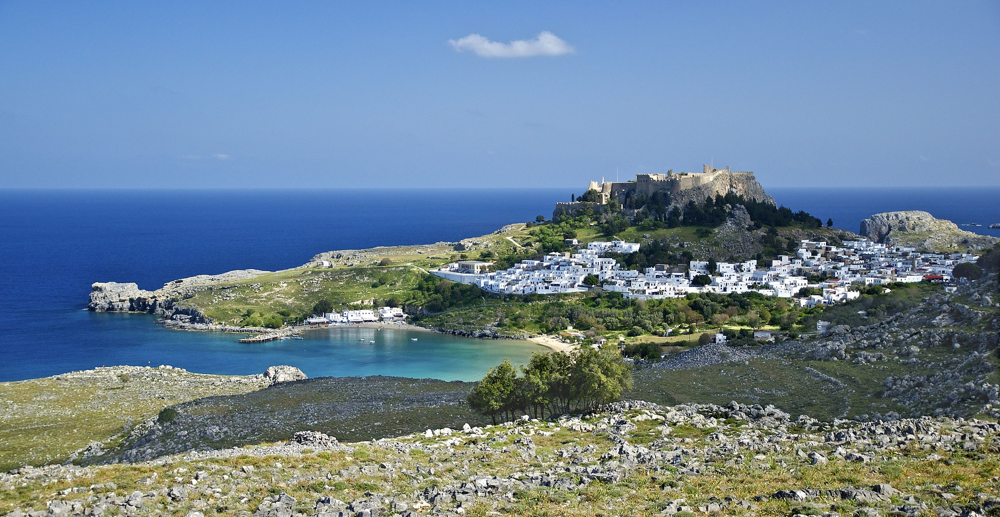

| Rodos (Rhodes), Greece, is a stunning island rich in history, featuring the medieval Old Town, ancient ruins, and
picturesque beaches. With its crystal-clear waters and charming villages, it is one of Greece’s most popular
destinations.
Main Attractions:
|
 |